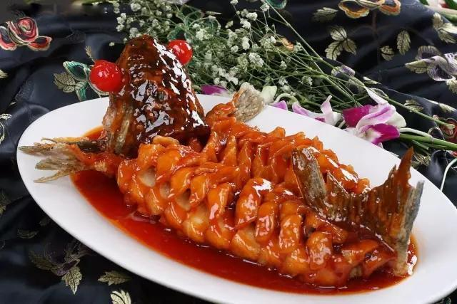

West Lake Fish in Vinegar Graw
- Recipe NameWest Lake Fish in Vinegar Graw
- Description
Chop pepper fish is a traditional dish in Xiangtan, Hunan Province.
- LevelHigh
- Time Needed50min
- Main Ingredientgrass carp
- Auxiliary IngredientFresh shiitake mushrooms, ginger, green onions, green onions, ginger, garlic
- Process
1. Prepare all the ingredients. Slice shiitake mushrooms, cut into thick shreds, and cut green onions into sections.
2. Clean up the fish first, score three knives on the front and the back, and evenly sprinkle an appropriate amount of green onion, ginger, garlic powder and oyster sauce, and spread evenly. Pour an appropriate amount of cooking wine, massage thoroughly and marinate for 20 minutes.
3. Take a large plate and spread the green onion and ginger on the bottom of the plate. Add the marinated carp.
4. Spread shiitake mushroom slices on and around the fish, sprinkle with chicken essence. Spread chopped pepper and tempeh on the fish, put the plate in the steamer, and steam it on high heat for 10 to 12 minutes.
5. Heat the oil in a separate pot and pour it on the fish while it is hot. At the end, burn a proper amount of steamed fish soy sauce.